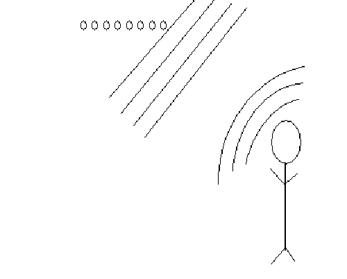
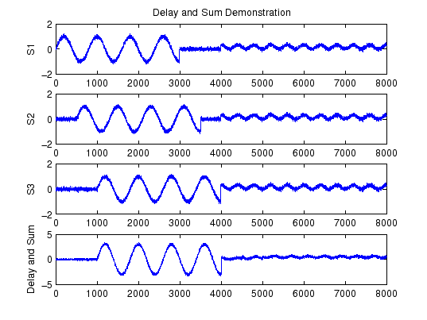

Next: Performance Up: Delay-and-Sum Beamforming
Previous: Delay-and-Sum Beamforming Contents
If we assume the talker is far away from the microphone array, the
acoustic wave will be nearly planer. Notice that the wavefront
propogates across every microphone. The simplest way to make use of
this is to delay the signal received at each microphone and sum
them together. This has the effect of increasing the Signal to
Noise Ratio (SNR) and increasing the Signal to Interference plus
Noise Ratio (SINR) if the interference is at a different angle than
the source relative to the array.

In the example below, consider the large squiggle to be our
source, the little squiggle to be interference, and the fuzziness
to be noise. If S1 and S2 are delayed in time and added to S3, the
result is the bottom signal. Notice the noise and interference seem
smaller. (A real signal would not have the source and interference
separated in time. And the first and last signal would be seperated
by at most a few samples.)

Todd A Goldfinger 2004-11-22